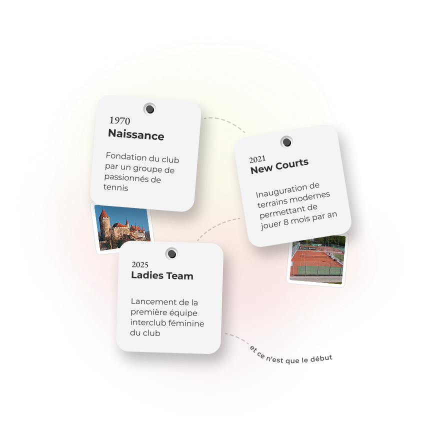
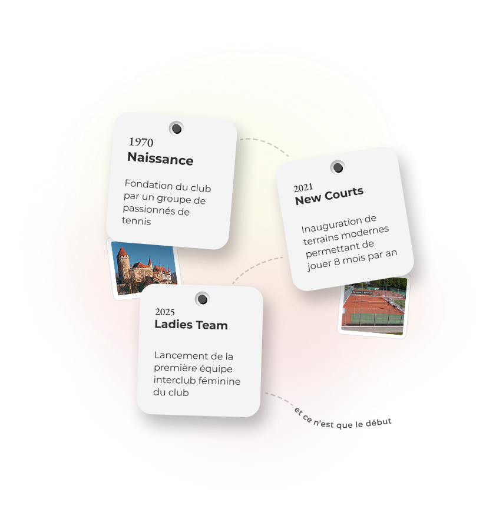

Hors Lucens
Tout le monde est le bienvenu
Lucens
Pour les habitants de Lucens
Soutien
Le tennis, oui... mais surtout l'apéro
Possible de jouer sans être membre ?
Puis-je faire un essai avant de m'inscrire ?
Comment accéder aux terrains ?
Est-ce que du matériel est mis à disposition ?
Vous avez d'autre questions ?